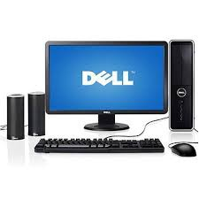

| SL.No | Name | Product Image | Price (in Rs.) | Description |
|---|---|---|---|---|
| 1 | DELL DESKTOP COMPUTER |  | 27,990.00 | Speed 2.6 GHZ RAM 2 GB PROCESSOR Intel i3 HDD 500 GB DISPLAY 20 " WIDE LED ONBOARD GRAPHICS DVD DRIVE -DVDRW |
| 2 | Hp G5 NOTEBOOK | 19,579.00 | RAM 4GB Processor AMD HDD 500 GB DISPLAY 20 " LED DVD DRIVE -DVDRW WIFI HD WEBCAM |
|
| 3 | HP Keyboard | 599.00 | Type : Wired Interface : USB Compatible with all notebooks and desktops |
|
| 4 | iBall Optical Mouse | 399.00 | Technology Optical Sensor Technology Interface Shiny Black (P S/2 or USB) Black Red (PS/2 or USB) Buttons 3 Buttons with Scroll wheel Resolution 800 D PI Operating Systems Supported Windows 98,2000,XP,Vista,7,MAC 8.6 or above & Linux 2.414 or abov e Warranty 3 Years |
|
| 5 | Philips USB Speakers | < /td> | 499.00 | Hassle-free Easy to connect to either a PC or a laptop Enjoy music, games, movies and online videos Audio-in for easy portable music playback USBplug for power |
| 6 | Fujitsu SCANNER | < /td> | 25750.00 | Item Height 13.3 cm Item Width 13.5 cm Item Weight 2.5 Kg Product Dimensions 29.8 x 13.5 x 13.3 cm Item model number PA03708-B021 Number of USB 2.0 Ports Wattage 18 Watts Operating System Windows |